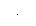
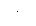

|
|

Triggering
Applies to sweep and burst only. You can issue triggers for sweeps or bursts using internal triggering, external triggering, or manual triggering.· Internal or "automatic" triggering is enabled when you turn on the function generator. In this mode, the function generator outputs continuously when the sweep or burst mode is selected.· External triggering uses the rear-panel Trig In connector to control the sweep or burst. The function generator initiates one sweep or outputs one burst each time Trig In receives a TTL pulse. You can select whether the function generator triggers on the rising or falling edge of the external trigger signal.· Manual triggering initiates one sweep or outputs one burst each time you pressfrom the front-panel. Continue pressing this key to
re-trigger the function generator.· Thekey is disabled when in remote and when a function other than burst or sweep is currently selected.
|
Quadralay Corporation http://www.webworks.com Voice: (512) 719-3399 Fax: (512) 719-3606 sales@webworks.com |
|
|